UDN
Search public documentation:
UnrealFrontendKR
English Translation
日本語訳
中国翻译
Interested in the Unreal Engine?
Visit the Unreal Technology site.
Looking for jobs and company info?
Check out the Epic games site.
Questions about support via UDN?
Contact the UDN Staff
日本語訳
中国翻译
Interested in the Unreal Engine?
Visit the Unreal Technology site.
Looking for jobs and company info?
Check out the Epic games site.
Questions about support via UDN?
Contact the UDN Staff
Unreal Frontend (언리얼 프론트엔드)
문서 변경내역: Josh Adams 작성. Jeff Wilson 업데이트. 홍성진 번역.
개요
 위 스크린 샷에서는 아이폰에서 게임을 시험하기 위해 UFE가 사용되고 있으며, 다음과 같은 스텝이 필요합니다:
위 스크린 샷에서는 아이폰에서 게임을 시험하기 위해 UFE가 사용되고 있으며, 다음과 같은 스텝이 필요합니다: - 스크립트 코드 컴파일하기
- 데이터 쿠킹하기
- 아이폰용으로 게임 패키징하기
- 디바이스로 배치하기
PC에서의 반복처리(iterate)
Unreal Frontend 접근하기
Binaries 폴더에서 찾을 수 있습니다.
 UDK 설치시 등록된 시작 메뉴를 통해 실행시킬 수도 있습니다. [UDK 버전] > Tools 폴더에 있습니다.
UDK 설치시 등록된 시작 메뉴를 통해 실행시킬 수도 있습니다. [UDK 버전] > Tools 폴더에 있습니다.

Unreal Frontend 인터페이스

툴바
 Unreal Frontend 의 툴바는 개별 태스크를 실행시키는 데, 잡 (또는 일련의 태스크들)을 환경설정하고 실행시키는 데, UnrealConsole 을 실행시키는 데, 모든 선택 대상을 리부팅하는 데 사용됩니다.
Unreal Frontend 의 툴바는 개별 태스크를 실행시키는 데, 잡 (또는 일련의 태스크들)을 환경설정하고 실행시키는 데, UnrealConsole 을 실행시키는 데, 모든 선택 대상을 리부팅하는 데 사용됩니다.
| 버튼 | 설명 |
|---|---|
 
|
현재 파이프라인 잡을 시작합니다.
메뉴 옵션
|
|
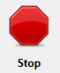 | 현재 파이프라인 잡을 멈춥니다. |
 
|
파이프라인의 Compile Script 단계까지 지속되는 옵션 및 작업입니다.
메뉴 옵션
|
 
|
파이프라인의 Cook 스텝까지 지속되는 옵션 및 작업입니다.
메뉴 옵션
|
|
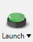 
|
파이프라인의 Launch 단계까지 지속되는 옵션 및 작업입니다.
메뉴 옵션
|
|
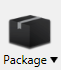 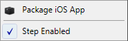 |
모바일 디바이스용 게임을 패키징하는 파이프라인 단계에 대한 옵션 및 작업입니다.
메뉴 옵션
|
 
|
PC나 콘솔용 게임을 패키징하는 파이프라인 단계용 옵션 및 작업입니다.
메뉴 옵션
|
 
|
패키징된 게임을 연결된 모바일 디바이스로 배치하는 파이프라인 단계용 옵션 및 작업입니다.
메뉴 옵션
|
|
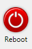 | 선택된 대상을 리부팅합니다. |

| Unreal Console을 실행시킵니다. |
프로파일 목록
 프로파일 목록은 기존 환경설정 프로파일을 모두 표시합니다. 환경설정 프로파일은 파이프라인 잡 셋업은 물론 환경설정 세팅 전부의 개별 모음집입니다. Unreal Frontend 에서는 다양한 게임, 대상 등 사이의 전환을 쉽고 빠르게 하는 데 프로파일을 사용합니다. 프로파일은 컴파일 및 쿠킹, 쿠킹 및 패키징, 쿠킹 및 패키징 및 배치 등에 대해 구성시킬 수 있습니다. 그리고서, 그냥 적절한 프로파일을 선택한 다음 Start 버튼을 클릭하면 프로파일에 관련된 환경설정 세팅에 따라서, 해당 프로파일에 관련된 파이프라인 잡 동작을 수행하게 됩니다.
새 프로파일은 기존 프로파일의 cloning, 클론(복제)을 통해 만들 수 있습니다. 프로파일을 클론하려면, 프로파일을 선택한 다음
프로파일 목록은 기존 환경설정 프로파일을 모두 표시합니다. 환경설정 프로파일은 파이프라인 잡 셋업은 물론 환경설정 세팅 전부의 개별 모음집입니다. Unreal Frontend 에서는 다양한 게임, 대상 등 사이의 전환을 쉽고 빠르게 하는 데 프로파일을 사용합니다. 프로파일은 컴파일 및 쿠킹, 쿠킹 및 패키징, 쿠킹 및 패키징 및 배치 등에 대해 구성시킬 수 있습니다. 그리고서, 그냥 적절한 프로파일을 선택한 다음 Start 버튼을 클릭하면 프로파일에 관련된 환경설정 세팅에 따라서, 해당 프로파일에 관련된 파이프라인 잡 동작을 수행하게 됩니다.
새 프로파일은 기존 프로파일의 cloning, 클론(복제)을 통해 만들 수 있습니다. 프로파일을 클론하려면, 프로파일을 선택한 다음 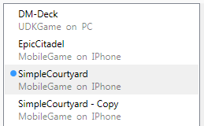
프로파일의 이름변경은 선택한 다음Enter 키를 치면 새 이름을 전송합니다.
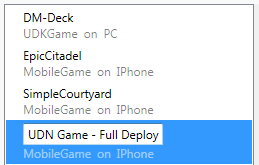
프로파일의 삭제는 선택한 다음 버튼을 누르면 됩니다.
 맥락 메뉴
맥락 메뉴
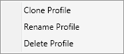
- Clone Profile 프로파일 클론 - 선택된 프로파일의 사본을 만듭니다.
- Rename Profile 프로파일 이름변경 - 선택된 프로파일의 이름을 수정가능하게 만듭니다.
- Delete Profile 프로파일 삭제 - 선택된 프로파일을 제거합니다.
환경설정 세팅
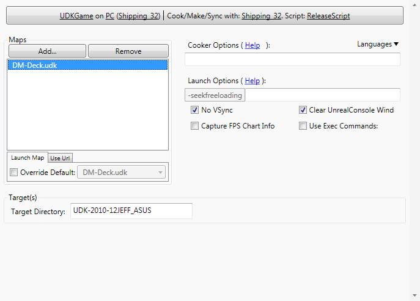
환경설정 세팅 패널은 현재 프로파일에 대해 게임의 컴파일링, 쿠킹, 패키징에 사용되는 환경설정에 관련된 세팅 및 속성이 전부 담겨있는 곳입니다. Configuration 버튼은 환경설정 옵션을 표시해 주어 변경될 수 있도록 합니다.Maps
 Maps 부분은 게임에 쿠킹 후 패키징시킬 맵을 추가 또는 제거시키는 부분입니다. 게임을 실행시킬 때 불러올 URL 또는 디폴트 맵을 설정하기도 합니다.
Maps 부분은 게임에 쿠킹 후 패키징시킬 맵을 추가 또는 제거시키는 부분입니다. 게임을 실행시킬 때 불러올 URL 또는 디폴트 맵을 설정하기도 합니다.
Cooker Options
 Cooker Options 부분은 콘텐츠 쿠커용 명령줄 옵션은 물론 쿠킹할 언어도 설정합니다.
언어
Cooker Options 부분은 콘텐츠 쿠커용 명령줄 옵션은 물론 쿠킹할 언어도 설정합니다.
언어

Launch Options
 Launch Options 부분은 게임 실행용 명령줄 옵션 및 기타 속성을 설정할 수 있는 곳입니다.
Launch Options 부분은 게임 실행용 명령줄 옵션 및 기타 속성을 설정할 수 있는 곳입니다.
| 옵션 | 설명 |
|---|---|
| No VSync VSync 없음 | 체크하면 VSync 가 꺼집니다. |
| Capture FPS Chart Info FPS 차트 정보 캡처 | 체크하면 게임을 실행할 때 FPS 차트 정보가 캡처됩니다. |
| Clear UnrealConsole Wind 언리얼콘솔 와인드 비우기 | 체크하면 게임이 실행될 때마다 언리얼콘솔 창이 비워집니다. |
| Use Exec Commands 실행 명령 사용 | 체크하면 게임을 실행할 때 내려지는 실행 명령 목록을 입력할 수 있는 텍스트 박스가 표시됩니다. |
Targets
 Targets 부분은 디버깅 대상 찾기에 사용할 디렉토리를 설정하는 곳입니다.
주: 환경설정 옵션의 Platform 이 PC 또는 콘솔 플랫폼으로 선택되었을 때에만 표시되는 부분입니다.
Targets 부분은 디버깅 대상 찾기에 사용할 디렉토리를 설정하는 곳입니다.
주: 환경설정 옵션의 Platform 이 PC 또는 콘솔 플랫폼으로 선택되었을 때에만 표시되는 부분입니다.
Mobile
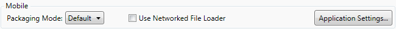
Mobile 부분은 사용할 패키징 모드의 설정, 네트워크 파일 로더 사용 여부 토글, Unreal iOS Configuration Wizard 열기 등을 하는 곳입니다. 패키징 모드| 모드 | 설명 |
|---|---|
| Default 디폴트 | 시험 및 애드혹 배포용으로 연결된 iOS 디바이스에 배치시킬 iOS 게임을 패키징합니다. |
| Distribution 배포 | 앱 스토어 제출용 iOS 게임을 패키징합니다. 이 모드로 패키징된 게임은 iOS 디바이스에 직접 배치시킬 수 없습니다. |
Active Instances
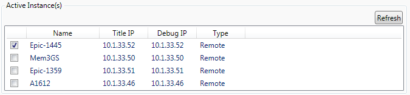
모바일 디바이스를 대상으로 할 때, Active Instances(활성 인스턴스) 목록에는 현재 게임을 실행중인 디바이스가 전부 표시됩니다. 주: 이 부분은 환경설정 옵션의 Platform 을 모바일 플랫폼으로 선택했을 때만 표시됩니다.출력 창
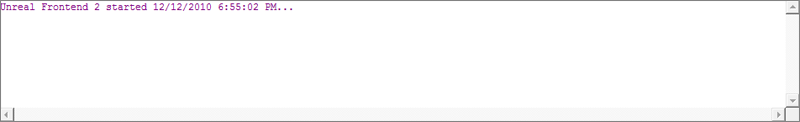
_출력 창_에는 Unreal Frontend 가 수행하는 작업의 진행상황에 경고나 에러같은 일반적인 정보도 포함되어 표시됩니다.Unreal Frontend 사용하기
파이프라인 잡
Unreal Frontend 는 파이프라인 잡, 또는 일련의 태스크들에 대한 연속 수행을 구성하는 기능을 제공합니다. 일련의 태스크들은 순서대로 완료될 것이며, 그 잡의 진행상황은 경고와 에러를 포함하여 출력 창에 표시됩니다. 풀 빌드 프로세스는 시간이 많이 걸리는 반면, 파이프라인 잡은 언리얼 엔진 3 게임을 빌드하고 패키징하는 데 필요한 태스크를 훨씬 쉽고 더욱 효율적으로 처리할 수 있습니다. 파이프라인 잡을 통해 프로세스를 환경설정 및 시작시키면, Unreal Frontend 에게 다양한 스텝의 처리를 맡기고서 사용자는 다른 작업을 하러 갈 수 있게 됩니다. 현재 파이프라인 잡의 일부가 아닌 스템은 Skip 오버레이로 표시됩니다. 일정 스텝에 대한 메뉴에서 Step Enabled 항목을 토글시키면 어떤 태스크도 파이프라인 잡에 추가시킬 수 있습니다.
일정 스텝에 대한 메뉴에서 Step Enabled 항목을 토글시키면 어떤 태스크도 파이프라인 잡에 추가시킬 수 있습니다.
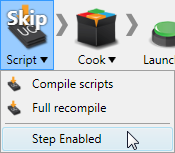
이 스텝이 켜지면 파이프라인의 일부로 수행될 것입니다. Skip 오버레이는 더이상 표시되지 않으며, 메뉴의 Step Enabled 항목이 토글됩니다.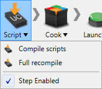
툴바에 있는 Start 버튼을 클릭하면 파이프라인 잡이 시작됩니다.
툴바에 있는 Stop 버튼을 클릭하면 언제고 파이프라인 잡이 중단됩니다.
환경설정하기
Unreal Frontend 가 파이프라인 개별 스텝을 어떻게 처리하는지, 사용가능한 스텝은 어떤 것이 있는지는 현재 환경설정에 따라 달라집니다. 각 프로파일에는 자체 환경설정 세팅이 있습니다. 환경설정은 빌드할 게임, 대상 플랫폼, 게임 환경설정, 스크립트 환경설정, 쿠커 환경설정, 포함시킬 맵 등등 기타 다양한 세팅들로 구성됩니다. 선택된 프로파일에 대한 현대 환경설정 옵션을 보고 변경하려면, 환경설정 세팅 패널의 Configuration 버튼을 클릭하면 됩니다. 환경설정 세팅 패널이 까매지게 되며, 현재 환경설정 옵션이 오버레이 표시됩니다.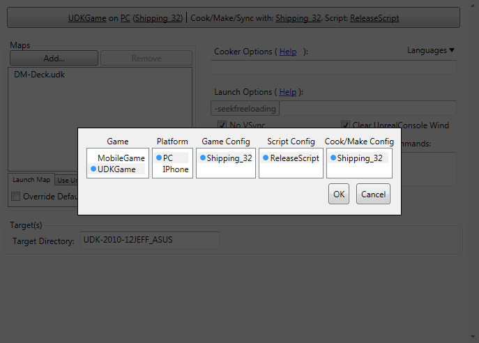
다음 각각에 대한 옵션에서 선택합니다:- Game 게임 - 사용가능한 게임 프로젝트 전부에서 사용할 게임을 선택합니다.
- Platform 플랫폼 - 빌드 대상 플랫폼을 선택합니다.
- Game Config 게임 환경설정 - 게임에 사용할 환경설정을 선택합니다.
- Script Config 스크립트 환경설정 - 스크립트를 빌드할 때의 환경설정을 선택합니다.
- Cook/Make Config - 쿠킹시 사용할 환경설정( 실행파일)을 선택합니다. Make 는 이 실행파일 상에서 호출(invoke)합니다.